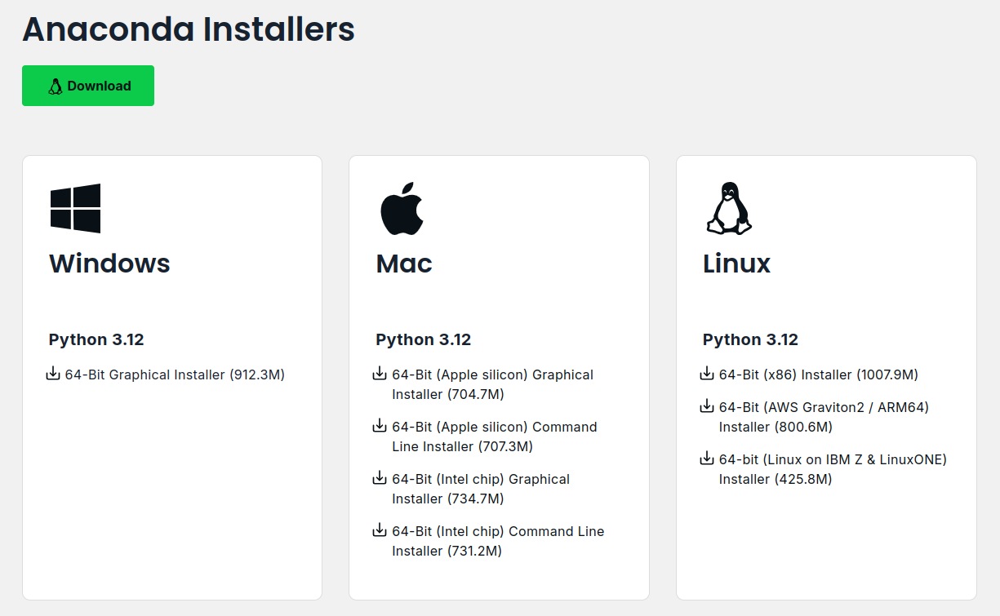
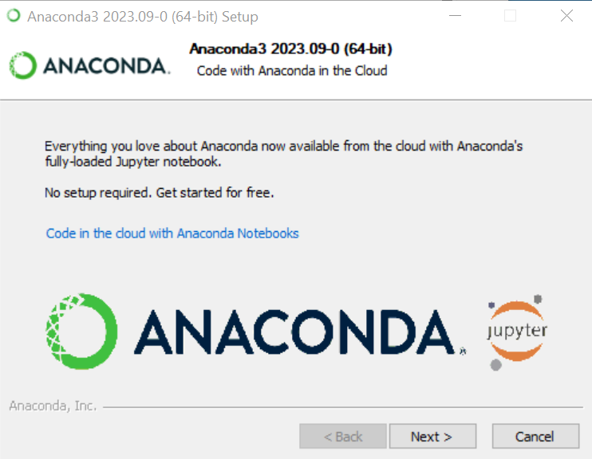
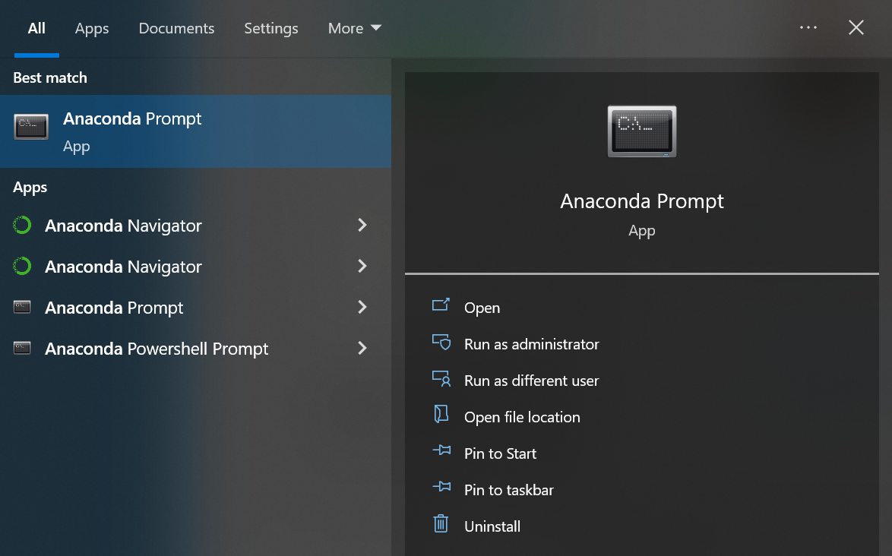
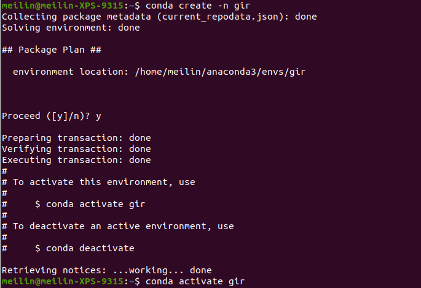
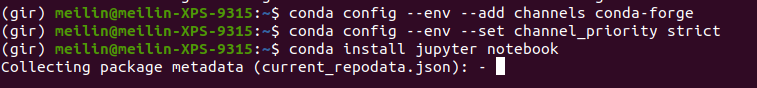
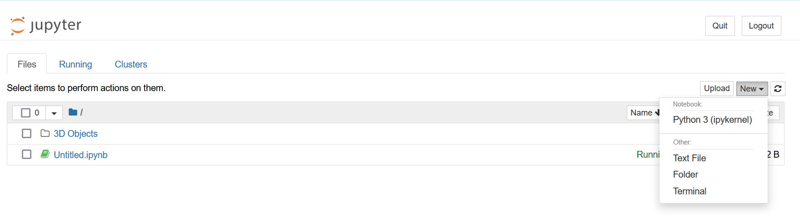
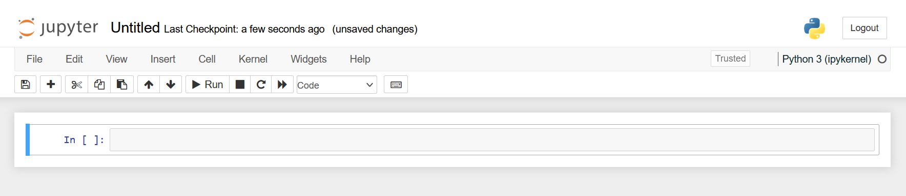

Lab 1 - Installation#
Th. 03.10.2024 15:00-17:00
Instructions for installing Jupyter Notebook with Anaconda#
STEP 1: Download Anaconda#
Download the Anaconda installer based on your operating system:
Windows
Mac OS
Linux

STEP 2: Install Anaconda#
Select the default options when prompted during the installation.

STEP 3: Create a new conda environment#
It’s recommended to create a separate conda environment for this class to avoid potential conflicts between packages.
1. Open Anaconda Prompt#

2. Type in Command Line#
conda create -n gir#you can replace gir with your desired environment nameconda activate gir#activate the newly created environmentconda config --env --add channels conda-forgeconda config --env --set channel_priority strictconda install jupyter notebook#install jupyter notebookconda install pandas# the library we will use today, same for other librariesconda install ipykernel# Install ipykernel to allow the environment to be used as a Jupyter kernelpython -m ipykernel install --name girjupyter notebook#launch jupyter notebook
 
STEP 4: Getting started with Jupyter Notebook#
To create a new notebook, click on the “New” button in the top right corner of the Jupyter Notebook interface and select Python 3 from the drop-down menu.
 
Try the following code blocks:#
print('Hello World!')
Hello World!
help(print)
Help on built-in function print in module builtins:
print(...)
print(value, ..., sep=' ', end='\n', file=sys.stdout, flush=False)
Prints the values to a stream, or to sys.stdout by default.
Optional keyword arguments:
file: a file-like object (stream); defaults to the current sys.stdout.
sep: string inserted between values, default a space.
end: string appended after the last value, default a newline.
flush: whether to forcibly flush the stream.
By convention, we import all libraries at the very top of the notebook. There are also a set of standard aliases that are used to shorten the library names. Pandas is one of the most widely used Python libraries in data science.
Some commonly used data wrangling operations in Pandas (here for more information):
Creating DataFrames#
DataFrame: a two-dimensional data structure that holds data like a two-dimension array or a table with rows and columns.
import pandas as pd
data = {
'fruit': ['apple', 'orange', 'banana', 'mango'],
'amount': [1, 3, 5, 2],
'color':['red','orange','yellow','yellow']
}
purchases = pd.DataFrame(data)
purchases
| fruit | amount | color | |
|---|---|---|---|
| 0 | apple | 1 | red |
| 1 | orange | 3 | orange |
| 2 | banana | 5 | yellow |
| 3 | mango | 2 | yellow |
Selecting rows and columns#
Selection using label/index:
.locSelection using integer location:
.iloc
# To select a column of a DataFrame by column label,
# the safest and fastest way is to use the .loc method.
# General usage looks like df.loc[rowname,colname].
purchases.loc[:, ['fruit']] #the colon : here means "everything"
# try also:
# purchases.loc[[0],:]
# purchases.loc[0:2, ['fruit']]
| fruit | |
|---|---|
| 0 | apple |
| 1 | orange |
| 2 | banana |
| 3 | mango |
# iloc[] lets you slice the dataframe by
# row position and column position
purchases.iloc[0, 2]
'red'
Filtering Data#
purchases[purchases['amount'] > 2]
| fruit | amount | color | |
|---|---|---|---|
| 1 | orange | 3 | orange |
| 2 | banana | 5 | yellow |
purchases[purchases['color'] == 'yellow']
| fruit | amount | color | |
|---|---|---|---|
| 2 | banana | 5 | yellow |
| 3 | mango | 2 | yellow |
Submission#
For the participation grade, create a DataFrame of your own and submit the .ipynb file